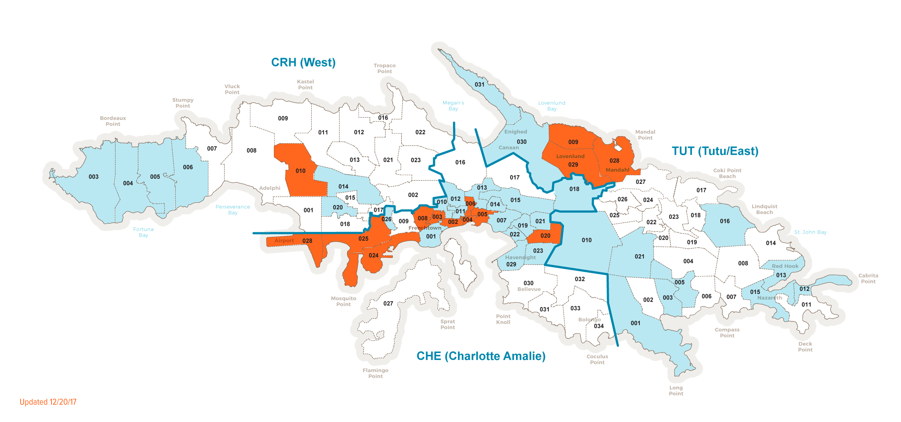
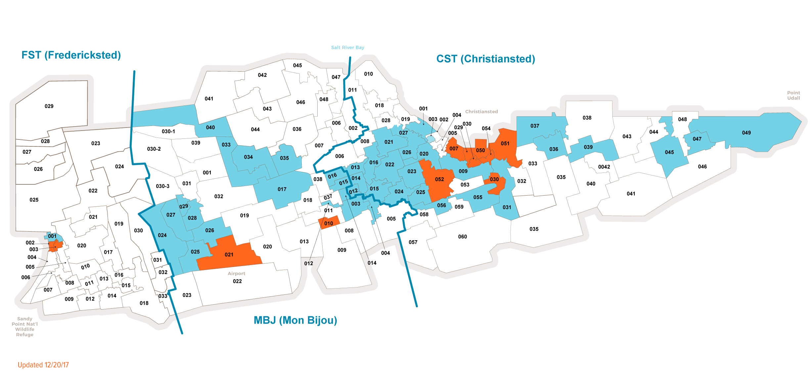
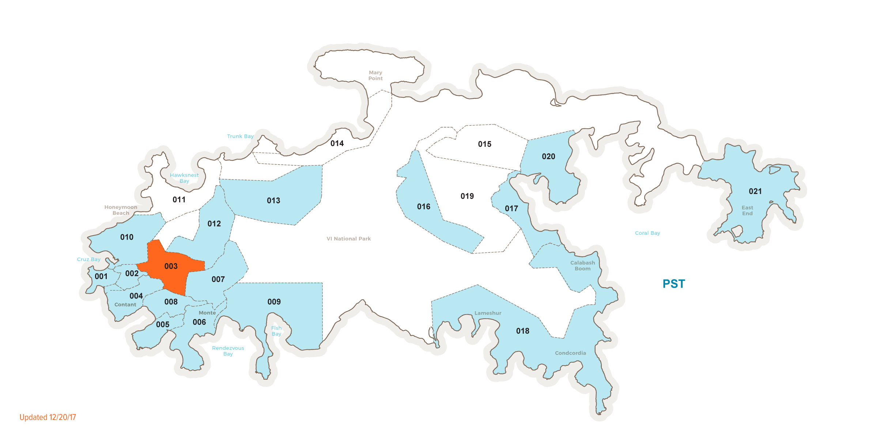

Residential
|
Business
|
340.777.VIYA(8492)
NODE MAPS: Everything below this header goes on Restoration Page.
Select island to view service status.
St. Thomas
St. Croix
St. St. John



WiFi MAPS: Everything below this header goes on Restoration Page.
Select island to view public WiFi locations.
St. Thomas
St. Croix
St. John